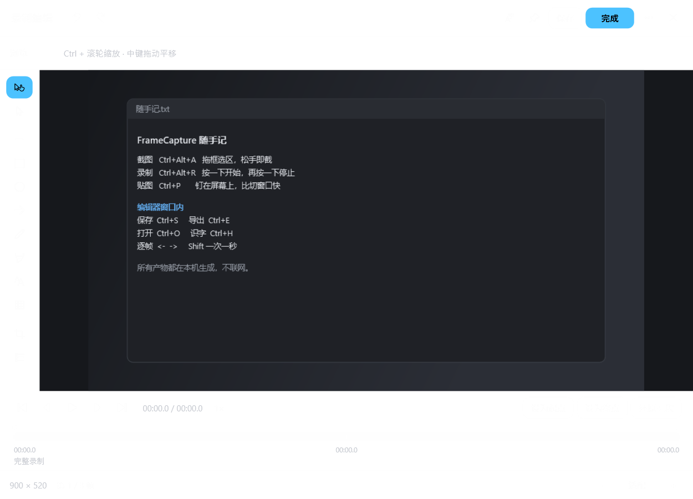
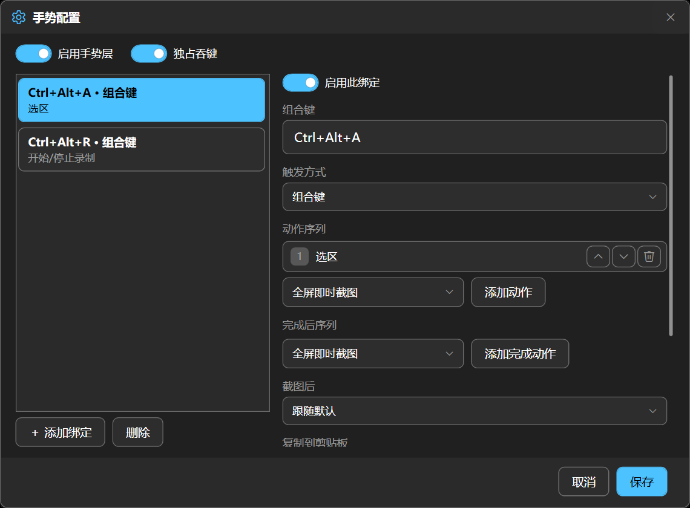
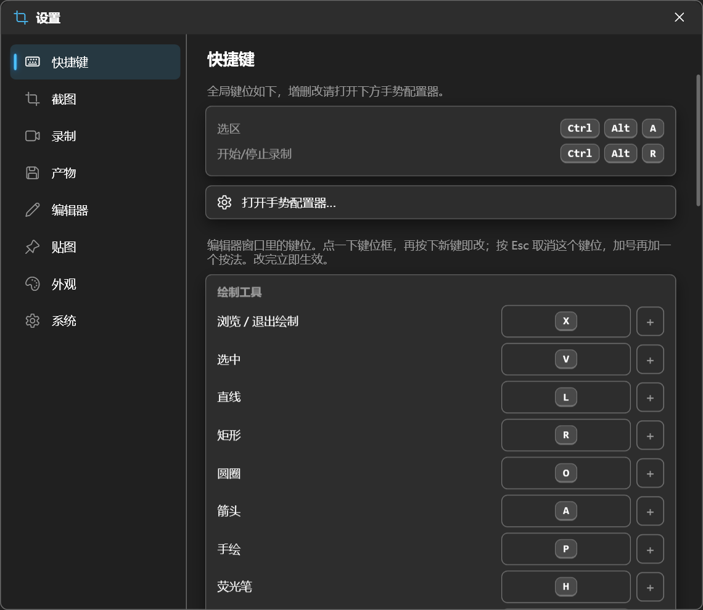
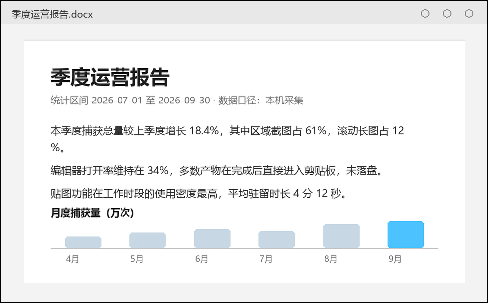

捕获范围
窗口、区域、指定屏幕。虚线框随光标改尺寸，松手即截。
Ctrl+Alt+AWindows 10 / 11 · x64 · 0.9 预览版
拖框选区、窗口吸附、滚动长图、GIF / MP4 录制、标注、贴图、文字识别。全局热键默认两条：Ctrl+Alt+A 截图、Ctrl+Alt+R 录制，其余键位设置里改。

全屏、窗口、区域、滚动长图。吸附到窗口边界，也吸附到内容边缘。
一个热键，或按住拖一下。录制按住录、松手成片。
截完进剪贴板、弹提示、直接进编辑器还是原地贴图，每条手势自己定。
八个动作，都在本机跑完。
窗口、区域、指定屏幕。虚线框随光标改尺寸，松手即截。
Ctrl+Alt+A选完那一下就已经截好。鼠标指针、窗口阴影各自可开关。
选完即截按一下起录，再按一下停。导出 MP4 / WebM / GIF，帧率跟显示器刷新率。
Ctrl+Alt+R看、剪、标、复制。逐帧走、设入出点、拖两端把手裁掉首尾。
点浮窗即进单键切换：直线、矩形、圆圈、箭头、手绘、荧光笔、文字、马赛克、裁剪、序号。
Shift 锁 45°把图钉在屏幕上。滚轮缩放、拖角变形、透明度可调，永远在最前。
Ctrl+P图里的字变成可复制的文本。走 Windows 内置 OCR，不联网。
Ctrl+O滚动区域自动拼成长图，边滚边预览结果。
实时拼接Ctrl+P 和 Ctrl+O 是编辑器窗口内的键，设置里逐条能改；全局默认只占 Ctrl+Alt+A 与 Ctrl+Alt+R 两条。
四个窗口，切换标签看每一块。
← → 走单帧，Shift+← → 走一秒，[ ] 设入出点，空格播放。

组合键、按住、双击、长按四种触发；一条手势串多个动作；截完之后写不写剪贴板也按手势定。

快捷键、截图、录制、产物、编辑器、贴图、外观、系统。

对照着填表、临时记住一段代码、把设计稿压在实现截图上比对。滚轮缩放，Ctrl+滚轮调透明度，双击关闭。
全局两条，其余在编辑器窗口内。两处键位都能在设置里改，全局键还能在手势配置器里加。
装完待在托盘，两个热键就能干活。0.9 预览版，先自己用一段时间再定发布节奏。
这个链接指向仓库 release/ 下当前构建产物。
%APPDATA%\FrameCapture，删掉即回到全新状态不会。捕获、编码、识字都在本机进程里完成，没有账号，也不发网络请求。文字识别用系统自带的 OCR 语言包。
只有安装那一步需要，要写程序目录和卸载注册表项。装完日常运行是普通权限，收在托盘里。
会。安装包没有代码签名，SmartScreen 会提示未知发布者，点「仍要运行」即可继续。预览版没买证书。
全局键在手势配置器里改，编辑器里的键在设置 · 快捷键里改。默认只占 Ctrl+Alt+A 与 Ctrl+Alt+R 两条。独占吞键开着时按键不传给后台，关掉照常传递。
帧按到达顺序落盘，不驻留内存，长度只受磁盘限制。产物导出 GIF、MP4、WebM 三种。
每个显示器独立选区，按物理像素采集。150% 缩放下不会糊，副屏拖到主屏边上照样能框。
不会，也没有后台更新进程。升级就是再装一次，配置在 %APPDATA%\FrameCapture，重装不动它。
卸载器删程序目录与注册表项。配置和已保存的产物保留不动，删掉 %APPDATA%\FrameCapture 就回到全新状态。